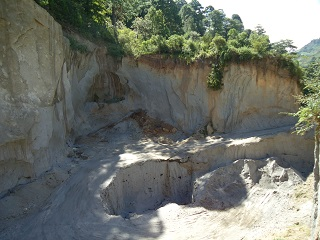
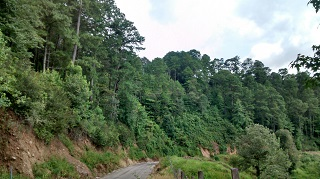
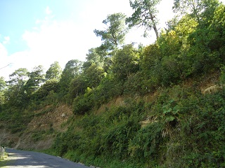
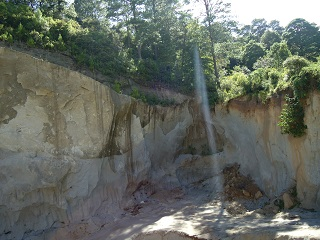
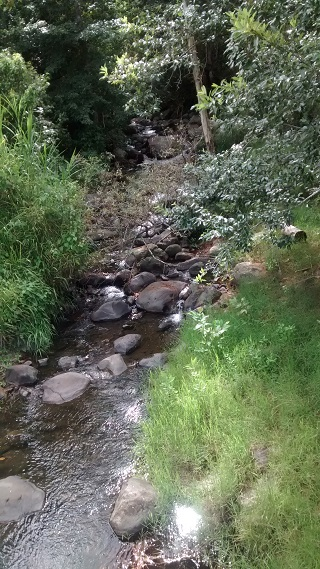

Forma parte del ejido San Felipe, colonia Rincón Chamula, municipio de pueblo nuevo Solistahuacan.
El rio esta antes de llegar a la comunidad, aproximadamente 1 km antes. En los alrededores se observa vegetación típica del lugar, así como también durante el camino se pueden ver paisajes distintos y en algunos puntos 'bancos de arena'.
Debido a la tala inmoderada que hay en la región, el afluente ha disminuido drásticamente, llegando en ocasiones casi a secarse.
Se ubica en la comunidad San Felipe, colonia rincón chamula, de pueblo nuevo Solistahuacan, Chiapas.
Estando en pueblo nuevo, tomar el tramo carretero pueblo nuevo-Rayón, con dirección a Rayón; aproximadamente a 8 km pasando por la colonia rincón chamula, se observa un desvío al tramo estatal, que se dirige al ejido san Felipe, en el desvío avanzar aproximadamente 5 km, quedando el afluente cerca de un puente, que es el que comunica a la comunidad.
En el lugar usted puede practicar actividades como:





posicione el mouse o de click sobre las imágenes
{kind=link}
{kind=link}
{kind=link}
{kind=link}
{kind=link}